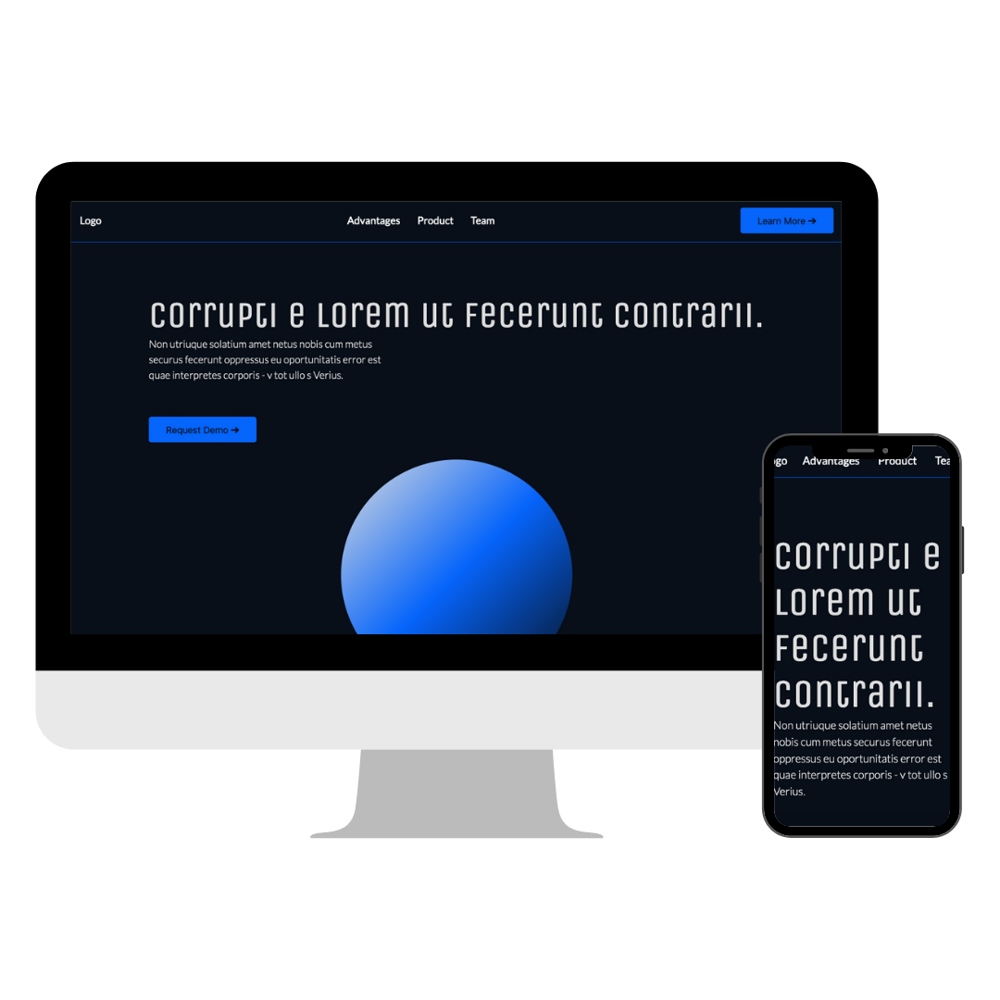

RESPONSIVE DESIGN
A summary of this project
For this assignment we were given an uncomlete HTML without any styling. Our job was to recognise the elements and style them with CSS flex and grid according to their respective purpose (components or layouts).
I also added some divs and classes here and there to get the desired outcome. In this assignment I also wanted implemented some previous knowldge, and therefor applied a color pallete, fonts and UI-card-styling.
Details from the project
